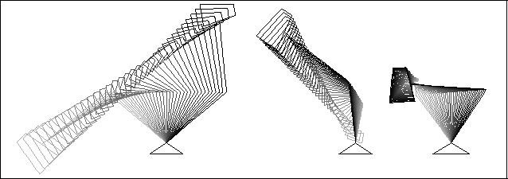
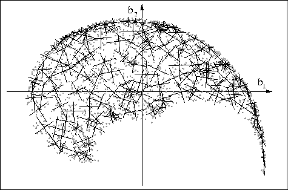
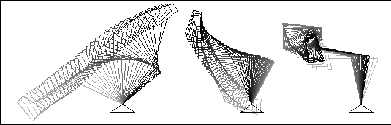
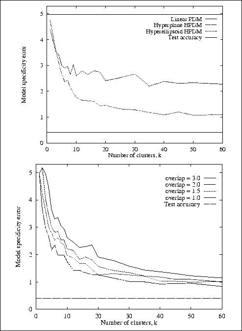
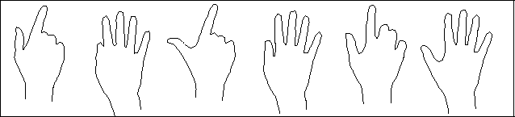
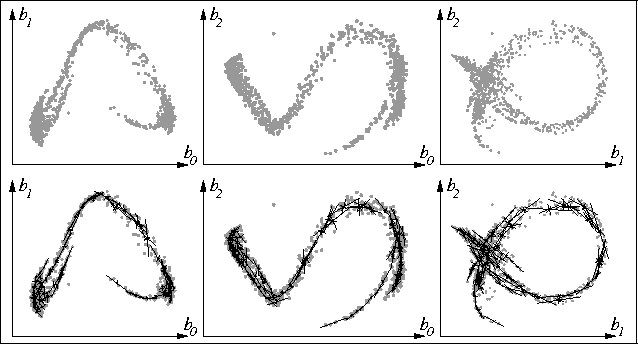
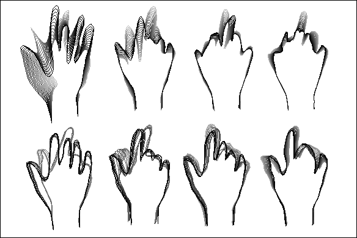

An anglepoise lamp consists of a fixed base and three rigid jointed sections. This was modelled in 2D using 49 landmarks. Training examples were generated by choosing uniformly-distributed random values for the three pivot angles. A global (linear) PCA was performed. Figure 4 shows the three most significant modes of variation. As can be seen, even along the principal axes, there are several invalid shapes generated.

Figure 4: The three most significant modes of variation of the
linear lamp PDM. Many invalid shapes can be seen.
A hierarchical PDM was then constructed from the same training data. Figure 5 shows the training set with the locally-linear constraint patches superimposed, giving some idea of the VSR that has been learned. The concept of a mode of variation does not exist within the context of a HPDM; the nearest equivalent is to `drag' the model through shape space, whilst applying shape constraints. Figure 6 illustrates three such drags. The results are much improved over the linear PDM; points are seen to move along arcs, not straight lines, and for the most part the lamp head size remains constant.

Figure 5: The lamp model shape space (2D projection), showing training
data and principal component axes for the constraint regions.

Figure 6: Three constrained `drags' through shape space for the lamp HPDM.
To measure the degree of model specificity (ability to exclude invalid shapes), a large number of shapes were generated, distributed randomly in the shape space. The HPDM constraints were applied, and the distance (in shape space) to the nearest position in the `ground-truth' VSR was found (approximated as the distance to the nearest of a large number of valid shapes) We have defined the specificity error of the model to be the 90th percentile of these distances (this reflects maximum error whilst excluding outliers). Figure 7 shows the effect on the specificity error of the lamp's HPDM as the number of clusters is varied. The degree of overlap is fixed for each plot, so as the number of clusters increases, the cluster size decreases accordingly. A lower bound to specificity error is experienced due to our approximation of the `ground-truth' VSR; this is the average distance between nearest-neighbour pairs in the ground truth shape set, and is shown as `test accuracy' on the graph. Plots for the linear PDM and Bregler's hyperplane approach are also shown for comparison.

Figure 7: Specificity of the lamp HPDM as the number of clusters is
varied, showing (left) a comparison of algorithms and (right) varying
degrees of overlap.
As expected, the model specificity error decreases as the number of clusters increases, since the VSR is being approximated more and more accurately with an increasing number of linear patches. The graph levels out at around k = 20, at which point the HPDM's specificity error is roughly a quarter of that of the linear PDM. The improvement in specificity achieved by using hyperellipsoid-bounded regions as opposed to hyperplane constraints is also visible, as is the degradation in specificity caused by increasing the degree of overlap--this is because larger linear patches are covering increasingly non-linear subregions of the VSR.
The main motivation for this work was the desire to build models from automatically collected training data. Hand shapes were sampled directly from a live video stream. Various gestures were performed against a black background; the image was thresholded and the hand outline extracted using a simple boundary-finding algorithm. 100 landmarks were positioned at equal intervals around the boundary. This method of data collection suffers greatly from the problem that landmarks rarely mark the same object feature across training examples. For example, when the fingers are outstretched the boundary is much longer than for a pointing gesture; the landmarks spread out more and tend to `slide' round the boundary. There were 1079 training examples in all; Figure 8 shows some examples.

Figure 8: Automatically collected training examples for a hand model.
A HPDM was constructed from the training data, using 80 clusters. Figure 9 shows several views of the training data in the global PCA shape space, along with the clusters found, and Figure 10 shows the four major non-constrained modes of variation (top row) and the four equivalent `drags' for the HPDM (bottom row).

Figure 9: Several views of the automatically collected hand training
data in shape space (top row) and the HPDM clusters found (bottom row).

Figure 10: Modes of variation for the automatically trained hand
model. Non-constrained modes (top row) and equivalent constrained
`drags' (bottom row).
Figure 9 clearly illustrates that the training data is virtually one-dimensional in nature; representing transitions between the various gestures, however the paths through the shape space are highly non-linear, spiraling through many dimensions.
Figure 10 demonstrates how in this case a Linear PDM fails to produce a model which would be specific enough for object tracking or location. The HPDM `drags' include only valid object shapes. There appear to be discontinuities in various drags; this is expected because the VSR is not necessarily continuous parallel to any one axis in the global PCA space.